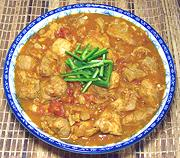

|
Tangy Chicken StewPhilippine - Asadong Manok | ||||
| Serves: Effort: Sched: DoAhead: |
2 w/rice ** 1-1/4 hrs Yes |
An interesting chicken stew, popular in the Philippines and made in a number of versions. It is mildly tart, as many Philippine dishes are. | |||
|
1-1/2 5 6 8 ------ 3 1/4 1/3 1 1/4 1 2 ------ 2 |
# cl oz oz --- c c t t T --- T |
Chicken Meat (1) Garlic Onion Tomato, ripe -- Broth Thai Chilis (2) Vinegar (3) Water Salt Pepper, black Paprika (4) Bay Leaf -------- Oil |
This recipe, alone with rice, will serve two good eaters, or four in Asian style with other dishes. Prep - (30 min)
|